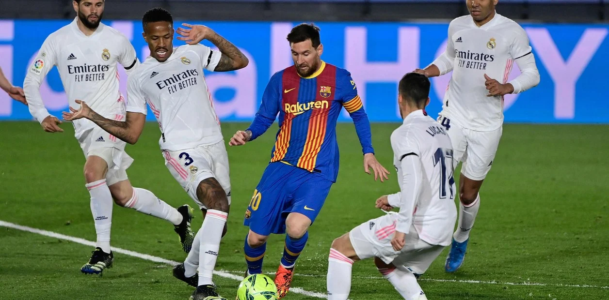
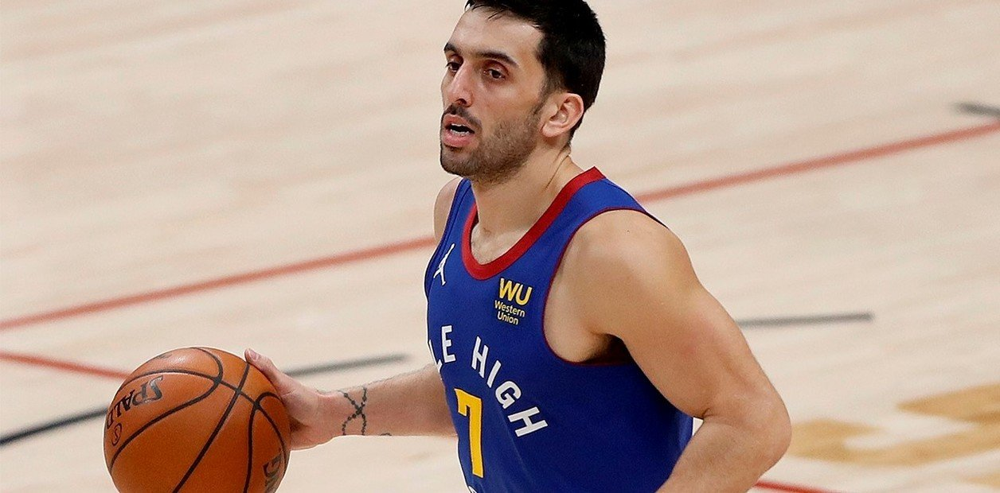

Deportes
Cuatro puntos clave para entender la Superliga Europea y
el impacto que
puede causar en Lionel Messi y la Selección Argentina.
Serán 20 clubes que se enfrentarán entresemana. Repartirá mucho más dinero que la UEFA, ¿Quién está detrás de la inversión?
La revancha de Campazzo:
cuatro triples en una ajustada victoria de
Denver
Con un gran aporte del base argentino, quien sumó 12 puntos en 27 minutos, los Nuggets vencieron 106-105 a Portland.
Schwartzman, a lo Messi en Barcelona
El Peque brilló en su partido frente al francés Corentin Moutet, se impuso en sets
corridos
por 6-4 y 6-2 y pasó por primera vez a los cuartos de final del certamen catalán.
El grupo de Boca en la Copa Libertadores 2021: clasificados, resultados y tabla de posiciones
El equipo de Russo terminó segundo en el Grupo C, en el que Barcelona de Ecuador quedó como líder absoluto. Santos, tercero y a la Sudamericana.